Restauratør
Prøv en helt ny købsoplevelse hvor hvert eneste køb er guidet af 3 uafhængige og detaljerede ratings fra vores netværk af professionelle Sommelier. Samtidig får du direkte adgang til den største samling af uafhængige vinimportører.
Vores unikke, udførlige og uafhængige ratings er dine, og du kan frit bruge dem til hurtigt og nemt at uddanne dit personale i den pågældende vin. Vores mål er at gøre din indkøbsproces hurtigere og mere præcis - vi er din ekstra sommelier.
Vi gør det også nemt for dig at finde den perfekte vin til gæsten og til maden, det eneste du skal gøre er at spørge gæsten, hvad de godt kan lide, så hjælper vi dig med resten!
Sign-up til nyhedsbrev!
Vinimportør
Giv din vin de bedste muligheder for at tilfredsstille din kunde.
Og vigtigst af alt din kundes gæster
Vi hjælper dig med at få beskrevet alle dine vine hos 3 af vores uafhængige sommelier - det skaber troværdighed, præcision og konsistens i præsentationen af dine vine.
Du får samtidig adgang til at markedsfører og sælge din vin til den største samling af restauratører i Danmark, uden at skulle bruge tid på transport til sælgermøder og uddeling af smagsprøver.
Sign-up til nyhedsbrev!
Sommelier
Bliv en del af vores professionelle og globale netværk af sommelier, lad dig inspirerer af andres vinbedømmelser og skab nye kontakter.
Få løbende mulighed for at smage og bedømme vin fra importører over hele landet.
Benyt vores platform til at markedsføre dine unikke kompetencer og bring dig i stilling til nye spændende jobmuligheder blandt branchens førende restauratører og importører.
Brug også vores ratingskema til at bedømme og ikke mindst huske de vine du i øvrigt smager, og lad andre se hvad du synes, om de vine du har smagt
Sign-up til nyhedsbrev!
Info
JaTak er stiftet af Christian Krøger, Kim Brylle og Jens Kam, med en vision om at skabe en professionel og præcis købsoplevelse, hvor hver enkelt vin respekteres for det den er.
Vi giver din vin den opmærksomhed den fortjener, og håber derigennem, at den finder vej til det helt rigtige bord.
Det er usnobbet vinglæde, det er nørderi, det er JaTak til et ekstra glas!
Kontakt: hello@jatak.eu